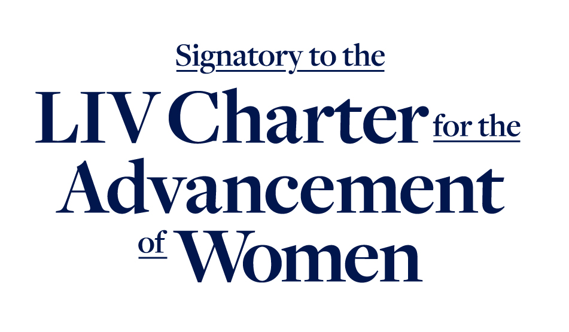

Who can be an executor in Queensland
Under Queensland law, an executor is the person named in a will to carry out the deceased's testamentary wishes. The office of executor arises from the will itself — but the executor only obtains legal authority to deal with estate assets once a grant of probate is made by the Supreme Court of Queensland.
There are few formal restrictions on who can be appointed as executor, but practical considerations are significant:
- Any adult with capacity may be appointed as executor. The person must be at least 18 years old and have the mental capacity to understand the nature of the role. A person with a criminal record or a history of bankruptcy is not automatically disqualified, but these factors may be relevant if the Court is asked to pass over or remove the executor.
- Beneficiaries often serve as executors. In many QLD estates, the executor is also a major beneficiary — often the surviving spouse or an adult child. This is lawful but creates inherent conflicts of interest that must be carefully managed (see below).
- Professional executors. A solicitor, accountant, trustee company, or the Public Trustee of Queensland may be appointed. Professional executors bring independence and expertise but charge fees. The Public Trustee Act 1978 (QLD) authorises the Public Trustee to act as executor or administrator.
- Multiple executors. A will may name more than one executor. Where multiple executors are appointed, they must act jointly — one executor cannot make decisions unilaterally. Disagreements between co-executors can stall the administration and may require court intervention. The Supreme Court can appoint up to four executors; any more require the Court's leave.
- Executor not required to accept. Being named as executor does not compel you to act. You may renounce probate before you have intermeddled in the estate. Once you have taken steps as executor, you may be taken to have accepted the office and may need to apply to the Court for leave to retire.
Key duties under the Succession Act 1981 (QLD)
The Succession Act 1981 (QLD), together with the Uniform Civil Procedure Rules 1999 (QLD) Chapter 15 and the general law, establishes the core obligations of a QLD executor. These duties are owed to the estate and its beneficiaries as a whole — the executor is their fiduciary.
Locate the Will & Apply for Probate
The executor must locate the original will, determine whether it is the last valid will, and apply for a grant of probate from the Supreme Court of Queensland. In QLD, there is no formal six-month probate expectation as in NSW, but delay must still be explained. The executor must also check the will's compliance with the s 10(2) positional signature requirement — a QLD-specific rule that can invalidate a will where the signature is not at the foot or end.
Identify, Secure & Insure Assets
The executor must identify all estate assets — real property, bank accounts, shares, personal effects, vehicles, and any other property — and take immediate steps to secure and insure them. This includes notifying banks and financial institutions, securing vacant properties, redirecting mail, and ensuring appropriate insurance coverage is maintained. Failure to secure assets can expose the executor to personal liability for losses.
Notify Beneficiaries & Advertise for Claims
The executor must notify all beneficiaries named in the will and any persons who would be entitled on intestacy. It is also prudent to advertise for claims against the estate — typically under s 67 of the Trusts Act 1973 (QLD), which provides a mechanism for executors to give notice to potential claimants. Advertising protects the executor from personal liability for unknown claims discovered later.
Pay Debts, Tax & Expenses
The executor must ascertain and pay the deceased's debts, funeral expenses, testamentary expenses, and any tax liabilities. This includes income tax to the date of death, any capital gains tax arising from the disposal of estate assets, and the estate's own tax obligations during the administration period. The executor should obtain a tax clearance from the ATO before final distribution where the estate is substantial or complex.
Distribute the Estate According to the Will
Once debts, tax, and expenses have been paid, the executor distributes the remaining assets to beneficiaries in accordance with the will. Distribution must not occur until the executor is satisfied that all claims have been addressed and any applicable limitation periods have expired. Premature distribution is one of the most common sources of executor liability.
Keep Accounts & Provide Information
The executor must maintain proper accounts of all estate receipts and payments. Beneficiaries are entitled to be informed about the administration of the estate and, in certain circumstances, to inspect estate accounts. The executor should be prepared to provide a full accounting to beneficiaries and to the Court if required. Failure to keep proper records is itself a breach of duty and can aggravate other breaches.
The standard of care expected of a QLD executor
An executor in Queensland is held to the standard of an ordinary prudent businessperson managing their own affairs. This is a higher standard than many lay executors expect. The standard is not that of a professional trustee, but nor is it a standard of casual indifference — the executor must act with reasonable diligence, care, and skill.
- Act in good faith and in the best interests of beneficiaries. The executor must put the interests of the estate ahead of their own. Decisions must be made for proper purposes.
- Exercise reasonable care and diligence. The executor must take the time to understand the estate, make informed decisions, and act promptly. An executor who delays or makes uninformed decisions may be held to have breached their duty.
- Avoid conflicts of interest. Where the executor is also a beneficiary, transactions that benefit the executor at the expense of other beneficiaries attract close scrutiny.
- Act impartially between beneficiaries. The executor must not favour one beneficiary over another and must distribute the estate strictly in accordance with the will's terms.
- Seek professional advice where appropriate. An executor who does not have the necessary skills — for example, in taxation, property valuation, or litigation — should engage appropriate professionals. The cost of reasonable professional advice is an estate expense. An executor who proceeds without advice where a prudent person would obtain it may be liable for resulting losses.
The standard is objective, not subjective. It does not matter that the executor personally believed they were doing the right thing — the question is what a reasonable person in the same position would have done.
Timeframes and when delay becomes a problem
Queensland law does not impose a rigid statutory deadline for applying for probate (unlike the six-month guideline commonly cited in NSW). However, this does not mean delay is without consequence. The executor must proceed with reasonable expedition, and delay can have serious practical and legal effects:
- Assets deteriorate or are lost. Unsecured assets may be damaged, stolen, or devalued. Insurance may lapse. Bank accounts may become dormant.
- Beneficiaries may apply to compel or remove the executor. A beneficiary frustrated by unreasonable delay may apply to the Supreme Court for orders requiring the executor to proceed with the administration, or for the executor to be removed and replaced. Where the Court finds the delay was without reasonable excuse, costs may be ordered against the executor personally.
- Evidence degrades. If the estate becomes disputed — for example, a family provision claim or a will challenge emerges — delay in identifying and securing evidence (medical records, solicitor files, witness recollections) can seriously prejudice the estate's position.
- Family provision claims have their own time limits. Under Part 4 of the Succession Act 1981 (QLD), an application for family provision must generally be made within nine months of the date of death, though the Court may extend this time. An executor who delays distribution should be aware that the expiration of this period is a relevant consideration.
- Tax obligations accumulate. The deceased's final tax return, and the estate's own tax returns, have deadlines. Penalties and interest may apply for late lodgement.
Conflicts of interest and self-dealing
Conflicts of interest are one of the most fraught areas of executor duties in Queensland. Because many executors are also beneficiaries, the line between acting for the estate and acting for oneself can blur. The law takes a strict approach:
- The self-dealing rule. An executor must not purchase estate assets for themselves — even at fair market value — without the informed consent of all beneficiaries or the approval of the Court. If an executor does purchase an estate asset, the transaction is voidable by any beneficiary, regardless of whether the price was fair.
- The fair-dealing rule. An executor must not enter into transactions with the estate in which their personal interest conflicts with their fiduciary duty. This includes selling assets to relatives, using estate property for personal benefit, or taking opportunities that belong to the estate.
- Executor-beneficiary conflicts. An executor who is also a beneficiary must be scrupulous in distinguishing between decisions made in their capacity as executor (for the benefit of all beneficiaries) and decisions that affect their personal entitlement as beneficiary. Where a conflict arises, the executor should consider obtaining directions from the Court or the consent of the other beneficiaries.
- Remuneration. A lay executor is not entitled to charge for their time unless the will expressly authorises remuneration. A professional executor (solicitor, accountant, trustee company) may charge fees under the will, under an applicable charging clause, or with the approval of the Court. An executor who pays themselves without proper authority commits a breach.
The consequences of breaching the self-dealing or fair-dealing rules can be severe. The transaction may be set aside, the executor may be required to account for any profit, and the executor may be removed from office.
Beneficiary rights to information in Queensland
Beneficiaries have a legitimate interest in knowing how the estate is being administered. An executor who withholds information or refuses to communicate may face applications for accounts or for removal:
- Right to be informed. Beneficiaries are entitled to be told of their interest under the will and kept reasonably informed about the progress of the administration. While there is no statutory duty to provide running updates, the fiduciary relationship requires a minimum level of communication.
- Right to inspect accounts. Beneficiaries with a vested interest in the estate are entitled to inspect estate accounts and supporting records. This includes bank statements, receipts, invoices, and the executor's working papers relating to the administration.
- Right to seek court orders. If an executor refuses to provide information or accounts, a beneficiary may apply to the Supreme Court for orders compelling the executor to account. If the executor's failure is unreasonable, the executor may be ordered to pay the costs of the application personally.
- Limits on disclosure. The right to information is not unlimited. A beneficiary is not entitled to documents protected by legal professional privilege, and a beneficiary with only a contingent or expectant interest may have more limited rights. If in doubt, an executor should seek advice about what must be disclosed.
What happens when an executor fails — removal, surcharge, and personal liability
An executor who breaches their duties faces real consequences. The Supreme Court of Queensland has broad powers to supervise executors and to grant relief to beneficiaries who have suffered from executor misconduct:
Removal or Passing Over
The Supreme Court may remove an executor who has misconducted themselves, is unfit to act, or whose continued involvement would impede the proper administration of the estate. Grounds for removal include: unreasonable delay, failure to account, conflict of interest, dishonesty, incapacity, or a breakdown in the relationship between co-executors that prevents effective administration. The Court may also pass over a named executor at the probate stage and instead appoint an administrator.
Surcharge & Compensation Orders
The Court may order an executor to compensate the estate for losses caused by a breach of duty. This is known as surcharging the executor. The executor may be required to restore assets that were misappropriated, pay the value of assets lost through negligence, or account for profits made improperly. Surcharge is not punitive — its purpose is to restore the estate to the position it would have been in had the breach not occurred.
Personal Liability
An executor who distributes the estate prematurely — before all debts, tax, and claims have been dealt with — may be personally liable to meet any valid claim that later emerges. An executor who enters into contracts on behalf of the estate without limiting their personal liability may be personally liable under those contracts. An executor who fails to pay tax may be assessed personally by the ATO for the unpaid amount in certain circumstances.
Costs Orders
Where an executor's misconduct causes unnecessary litigation, the Court may order the executor to pay costs personally rather than from the estate. This is a significant risk: an executor who unreasonably defends proceedings, fails to provide accounts, or conducts the administration in a way that forces beneficiaries to go to Court may find themselves paying both their own costs and the beneficiaries' costs.
Executor misconduct — act early
If you are a beneficiary concerned about an executor's conduct, early legal advice is critical. The longer misconduct continues, the greater the losses may be. The Supreme Court can intervene to protect estate assets before they are dissipated. Request urgent QLD executor misconduct advice →
Protecting yourself as an executor in Queensland
An executor who acts prudently and follows established procedures can significantly reduce their exposure to personal liability. Key protective steps include:
- Obtain legal advice early. Before taking any significant steps in the administration, obtain advice from a solicitor experienced in QLD succession law. The cost of advice is an estate expense and is far less than the cost of correcting mistakes.
- Advertise for claims. Publishing a notice under s 67 of the Trusts Act 1973 (QLD) inviting claims against the estate within a specified period protects the executor from personal liability for claims that emerge after distribution, provided the executor has complied with the notice requirements.
- Keep detailed records. Maintain a clear paper trail of all decisions, payments, and communications. If a beneficiary later questions your conduct, contemporaneous records are your best defence.
- Obtain beneficiary consents. Where a potential conflict arises — for example, if you propose to purchase an estate asset — obtain the informed written consent of all affected beneficiaries. If consent cannot be obtained, seek directions from the Court.
- Do not distribute prematurely. Wait until all debts, taxes, and claims have been dealt with and any applicable limitation periods have expired. If there is any doubt, seek advice before distributing.
- Seek Court directions where uncertain. The Supreme Court can give directions to an executor who is uncertain about a course of action. An executor who acts in accordance with Court directions is protected from later challenge. The cost of a directions application is usually paid from the estate.
- Consider renouncing if the role is unsuitable. If the estate is complex, if there is acrimony among beneficiaries, or if you do not have the time or expertise to administer the estate properly, consider renouncing probate before you have taken any steps as executor. It is better to decline the role than to accept it and get it wrong.
Common mistakes by QLD executors
Distributing too early
Distributing the estate before all debts, tax, and potential claims have been addressed is the single most common source of executor liability. A beneficiary who receives a distribution may be unwilling or unable to return it if a valid claim later emerges, leaving the executor personally liable.
Treating estate assets as personal property
Using estate funds for personal expenses, moving into the deceased's property without paying rent, or taking estate assets for personal use are all breaches of the executor's fiduciary duty, even if the executor is also a beneficiary entitled to those assets in due course.
Failing to advertise for claims
Many lay executors are unaware of the s 67 Trusts Act notice procedure. Distributing without advertising exposes the executor to personal liability for claims that emerge after distribution.
Ignoring tax obligations
An executor must attend to the deceased's outstanding tax returns and the estate's own tax obligations. The ATO can pursue the executor personally for unpaid tax in certain circumstances. Failing to obtain a tax clearance before distribution is a significant risk.
Failing to communicate with beneficiaries
An executor who goes silent — failing to respond to beneficiary inquiries or provide updates — creates suspicion and invites litigation. Even if the administration is proceeding properly, a failure to communicate may cause beneficiaries to make applications that could have been avoided with basic transparency.
Not checking the will for QLD-specific execution issues
Queensland's s 10(2) positional signature rule means that even a signed will can be invalid if the signature is not at the foot or end. Before applying for probate, the executor should check the will for execution defects and consider whether a s 18 dispensing application may be needed. Proceeding with a defective will without addressing this issue can cause significant delay and cost later.
When to get legal advice
An executor should seek legal advice from a solicitor experienced in QLD succession law in the following circumstances:
- Before accepting the role. Understand what the role entails before you intermeddle in the estate. If the estate is complex or there is known family conflict, early advice is essential.
- When the will appears defective or unclear. If there are questions about the will's execution (particularly under s 10(2)), its interpretation, or whether it is the last valid will, obtain advice before applying for probate.
- When beneficiaries are in dispute. If beneficiaries are arguing among themselves — or with you — early legal advice can help to manage the conflict and reduce the risk of litigation.
- When a family provision claim or will challenge is threatened. Once a dispute emerges, the executor must navigate it carefully. Taking sides or ignoring the threat can prejudice the estate's position.
- When a conflict of interest arises. If you are both executor and beneficiary and a decision affects your personal entitlement differently from other beneficiaries, obtain advice about how to proceed — and consider applying to the Court for directions.
- Before distributing the estate. A final legal review before distribution can identify outstanding issues that may not be obvious to a lay executor — tax clearance, limitation periods, potential claims, and the mechanics of transfer for different asset classes.
- If you are unsure about anything. Executor duties are legal duties. The cost of advice is an estate expense. Getting it wrong can cost you personally.
Need advice on your QLD executor duties?
Whether you have been appointed as executor and need to understand your obligations, are concerned about potential liability, or are a beneficiary worried about an executor's conduct — we can provide clear, practical advice on your position under Queensland law. Early advice is the single most effective step you can take to protect yourself.
Frequently asked questions — QLD executor duties
Yes. Being named as executor in a QLD will does not oblige you to accept the role. You may renounce probate by filing a formal renunciation with the Supreme Court of Queensland — but you must do so before you have intermeddled in the estate. Intermeddling means taking any step as executor, such as paying funeral expenses, securing assets, or communicating with beneficiaries in your capacity as executor. Once you have intermeddled, you are generally taken to have accepted the office and must apply to the Court for leave to retire — which the Court may or may not grant. If you are considering renouncing, seek legal advice before taking any action in relation to the estate.
An executor is appointed by the will of the deceased. Their authority derives from the will itself, though they must obtain a grant of probate from the Supreme Court of Queensland to have legal authority to deal with third parties (such as banks and the Land Titles Office). An administrator is appointed by the Court where there is no valid will, no executor is named, the named executor has died or is unwilling to act, or the executor has been removed. The administrator's authority derives entirely from the grant of letters of administration. Administrators have broadly the same duties as executors. The Succession Act 1981 (QLD) sets out who is entitled to apply for letters of administration on intestacy, typically starting with the surviving spouse and then the next of kin. The Public Trustee of Queensland may also be appointed as administrator where no other person is willing or able.
Yes, in several circumstances. An executor who distributes the estate before paying known debts may be personally liable to the unpaid creditor. An executor who distributes prematurely — before advertising for claims under s 67 of the Trusts Act 1973 (QLD) and allowing the notice period to expire — may be personally liable for claims that emerge after distribution, even if the executor was unaware of them. An executor who enters into contracts on behalf of the estate without expressly limiting their personal liability may be personally liable under those contracts. An executor who fails to pay the deceased's tax liabilities or the estate's tax may be assessed personally by the ATO in certain circumstances. The key protection is to proceed methodically: identify all liabilities, advertise for claims, pay debts before distribution, and obtain a tax clearance where appropriate. If uncertain, seek legal advice.
Section 10(2) of the Succession Act 1981 (QLD) requires the testator's signature — or the signature of the person signing at the testator's direction — to be placed at the foot or end of the will. This is a QLD-specific requirement. As executor, you should examine the will for compliance with s 10(2) before applying for probate. If the signature appears in the margin, on a separate page, or at an unusual position, the will may be defective. You may need to make an application under s 18 for the Court to dispense with the formal requirement if you are satisfied the document expresses the deceased's intentions. Conversely, if you are aware of earlier wills with s 10(2) issues, you should investigate whether those wills were ever valid. Proceeding with probate on a will without addressing a known s 10(2) issue can lead to the grant being challenged later, with significant cost and delay.
Where a will appoints multiple executors, they must act jointly. One executor cannot make decisions or take actions unilaterally. If co-executors reach an impasse — for example, about whether to sell a property, how to distribute assets in specie, or whether to defend or settle a claim — the administration can stall. In such cases, any executor (or an interested beneficiary) may apply to the Supreme Court for directions. The Court can resolve the specific issue or, if the relationship has broken down irretrievably, may remove one or more executors or appoint an independent administrator. Mediation is also an option. The legal costs of resolving co-executor disputes are typically paid from the estate, but an executor who has acted unreasonably may be ordered to pay costs personally.